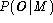
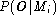
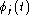
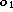
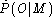
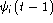
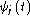

The previous section has described the basic ideas underlying HMM parameter re-estimation using the Baum-Welch algorithm. In passing, it was noted that the efficient recursive algorithm for computing the forward probability also yielded as a by-product the total likelihood  . Thus, this algorithm could also be used to find the model which yields the maximum value of  , and hence, it could be used for recognition.
In practice, however, it is preferable to base recognition
on the maximum likelihood state sequence since this generalises
easily to the continuous speech case whereas the use
of the total probability does not. This likelihood is
computed using essentially the same algorithm as the forward
probability calculation except that the summation is replaced
by a maximum operation. For a given model M,
let  represent the
maximum likelihood of observing speech vectors  to
 and being in state j at time t.
This partial likelihood can be computed efficiently using
the following recursion (cf. equation 1.16)
and being in state j at time t.
This partial likelihood can be computed efficiently using
the following recursion (cf. equation 1.16)
where
for 1<j<N. The maximum likelihood  is then given by

As for the re-estimation case, the direct computation of likelihoods leads to underflow, hence, log likelihoods are used instead. The recursion of equation 1.27 then becomes
This recursion forms the basis of the so-called Viterbi algorithm. As shown in Fig. 1.6, this algorithm can be visualised as finding the best path through a matrix where the vertical dimension represents the states of the HMM and the horizantal dimension represents the frames of speech (i.e. time). Each large dot in the picture represents the log probability of observing that frame at that time and each arc between dots corresponds to a log transition probability. The log probability of any path is computed simply by summing the log transition probabilities and the log output probabilities along that path. The paths are grown from left-to-right column-by-column. At time t, each partial path  is known for all states i, hence equation 1.31 can be used to compute  thereby extending the partial paths by one time frame.
This concept of a path is extremely important and it is generalised below to deal with the continuous speech case.
This completes the discussion of isolated word recognition using HMMs. There is no HTK tool which implements the above Viterbi algorithm directly. Instead, a tool called HVITE is provided which along with its supporting libraries, HNET and HREC, is designed to handle continuous speech. Since this recogniser is syntax directed, it can also perform isolated word recognition as a special case. This is discussed in more detail below.